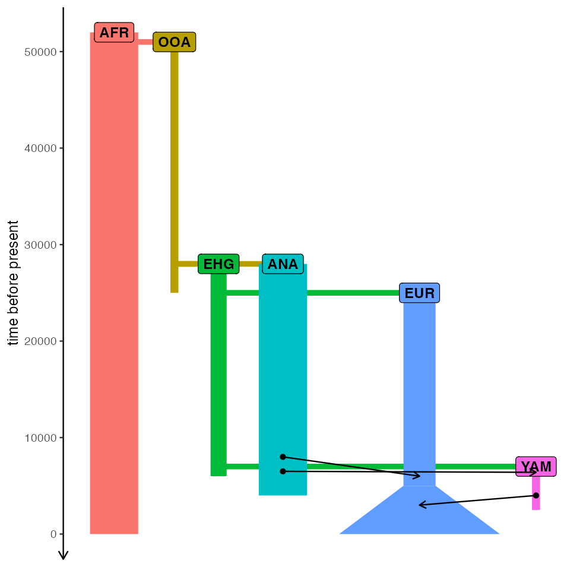

vignettes/vignette-04-nonspatial-models.Rmd
vignette-04-nonspatial-models.RmdThe biggest selling point of the slendr package is that you can program spatiotemporal population genetics models in R and have them execute automatically in SLiM. However, there are several reasons why you might be interested in using slendr even for non-spatial models. First, R is a language that many scientists already know, and being able to simulate data from the comfort of an R interface significantly lowers the barrier of entry. Second, because slendr makes SLiM appear almost as if it were just another R library, running simulations (spatial and non-spatial), fitting models, exploring parameter grids, calculating statistics, and visualization of results can be all be performed without leaving the R interface.
In this vignette, we will demonstrate how to program non-spatial models in slendr. However, we should start by noting that there is almost no difference between code for non-spatial and spatial models in slendr. The only visible difference is that spatial models include a map = argument in the population() constructor function of ancestral population(s), and non-spatial models do not. That’s it, that’s the difference. Switching between spatial and non-spatial models is performed internally by the package, without any user intervention.
To make the comparison clearer, we will use the example from the slendr landing page, but we will implement it in a non-spatial context (i.e., as a traditional random mating simulation).
First, let’s define population objects, splits, and other demographic events (note the missing map argument, which is set to FALSE by default):
library(slendr)
# African ancestral population
afr <- population("AFR", time = 52000, N = 3000)
# first migrants out of Africa
ooa <- population("OOA", parent = afr, time = 51000, N = 500, remove = 25000)
# Eastern hunter-gatherers
ehg <- population("EHG", parent = ooa, time = 28000, N = 1000, remove = 6000)
# European population
eur <- population("EUR", parent = ehg, time = 25000, N = 2000) %>%
resize(N = 10000, how = "exponential", time = 5000, end = 0)
# Anatolian farmers
ana <- population("ANA", time = 28000, N = 3000, parent = ooa, remove = 4000)
# Yamnaya steppe population
yam <- population("YAM", time = 7000, N = 500, parent = ehg, remove = 2500)We can define gene flow events in the same way as we did for the spatial model:
gf <- list(
geneflow(from = ana, to = yam, rate = 0.5, start = 6500, end = 6400, overlap = FALSE),
geneflow(from = ana, to = eur, rate = 0.5, start = 8000, end = 6000),
geneflow(from = yam, to = eur, rate = 0.75, start = 4000, end = 3000)
)The compilation step is also the same. The only (internal) difference is that we skip the rasterization of vector maps that is performed for spatial models in order to control and restrict population boundaries:
model <- compile(
populations = list(afr, ooa, ehg, eur, ana, yam),
geneflow = gf, generation_time = 30,
path = file.path(tempdir(), "non-spatial-model"), overwrite = TRUE
)Using the plot() function doesn’t make sense, as there are no spatial maps to plot. However, we can still plot the demographic graph, verifying that the model has been specified correctly:
plot_graph(model)
Even the final step—execution of the model in SLiM—is the same, using the built-in slim() function:
slim(model, sequence_length = 1, recombination_rate = 0, method = "batch")Even for non-spatial models, this function still uses the same SLiM back end script used for spatial models. The only difference is that all spatial features are switched off, making the model run as a simple random-mating simulation.
Given that we are running a non-spatial simulation, you might wonder if it wouldn’t be more efficient to use a coalescent simulator. Indeed, slendr also provides an alternative msprime back end just for this purpose. We could run the exact same simulation with msprime like this:
msprime(model, sequence_length = 1, recombination_rate = 0, method = "batch")In fact, because both SLiM and msprime back ends save outputs in a tree sequence format, we can analyse them using the same tools. See this vignette for more information about tree sequence analysis with slendr, and for more discussion on alternative simulation back ends and more extensive examples of data analysis with tree sequences you can read this tutorial.